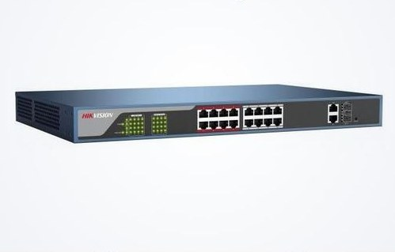

كل المنتجات ← أجهزة الشبكات
الموديل: DS-3E1318P-EI

| الماركة | هيكفيجن |
|---|---|
| الموديل | DS-3E1318P-EI |
| نوع المنتج | سويتش PoE بت |
| عام | |
| الهيكل | Metal material |
| الوزن الصافي | 2.59 kg (5.71 lb) |
| الوزن الإجمالي | 3.68 kg (8.11 lb) |
| الأبعاد | 440.00 mm × 44.00 mm × 220.80 mm (17.32'' × 1.73'' × 8.69'') |
| حرارة التشغيل | 0 °C to 45 °C (0 °F to 113 °F) |
| حرارة التخزين | -40 °C to 85 °C (-40 °F to 185 °F) |
| رطوبة التشغيل | 5% to 95% (no condensation) |
| رطوبة التشغيل | 5% to 95% (no condensation) |
| مصدر الطاقة | 100-240 VAC, 50/60 Hz, Max. 4 A |
| طريقة التركيب | Rack (equipped with mounting ears) |
| أقصى استهلاك للطاقة | 250 W |
| الاستهلاك في الخمول | 20 W |
| حماية من التيار المفاجئ | 6 kV |
| Network Parameters | |
| Ports | 16 × 10/100 Mbps PoE port,2 × Gigabit combo |
| MAC Address Table | 16 K |
| Switching Capacity | Whole-Device Performance: 9.2 Gbps Port Performance: 7.2 Gbps |
| Packet Forwarding Rate | Whole-Device Performance: 6.84 Mpps Port Performance: 5.36 Mpps |
| Internal Cache | 4 Mbits |
| Software Function | |
| Long Range | Ports 1 to 16: up to 300 m. Long range performance may vary depend on camera model or cable condition. |
| VIP Port | Ports 1 to 8: data on VIP ports is preferentially forwarded when bandwidth resources are insufficient. |
| Port Isolation | Ports 1 to 18: port isolation mode to improve network security Ports in an isolation group cannot communicate with each other, but they can communicate with ports outside the isolation group. |
| PoE Watchdog | Ports 1 to 16: auto detect and restart the cameras that do not respond. |
| Link Aggregation | Link aggregation is used to aggregate multiple physical ports to form a logical port for load balancing, bandwidth expansion, and port protection. Support static link aggregation. Support 1 aggregation group(s). |
| QoS | QoS is used to allocate bandwidth to different services so as to provide end-to-end service quality assurance. Support port-based priority configuration. Support SP, WRR priority schedule mode. |
| Loop Prevention | Loop prevention is used to prevent the switching network from forming loops, which will seriously affect network communication. Disabled by default. Support 802.1D STP. Support 802.1w RSTP. |
| VLAN | VLAN is used for network scale planning and network health improvement. Support 802.1Q. Configurable VLAN ID from 1-4094. Support Trunk, Access port mode. Support Max. 4094 VLAN. |
| HPP | Support one-click activation and remote management via Hik-Partner Pro. Functions supported: 1. Display the port rate. 2. Display the port bandwidth utilization rate. 3. Display the PoE power usage. 4. Display topology information. 5. Display the alarm status. 6. Restart ports and devices. 7. Enable port long-rage mode. 8. Remotely upgrade the device. |
| System Maintenance | Support device management via web. Support DHCP Client. Enabled by default for dynamic assignment of management IP addresses. Support Super IP, which is a fixed IP address (10.180.190.200) for direct access. Support management via Hik-Central Pro. Support remote management via Hik-Partner Pro. Support cable detection. Abnormal open circuits and short circuits as well as network cable length can be detected. Support 802.1ab LLDP for peer device discovery. Support port mirroring for fault locating. |
| DHCP Snooping | DHCP Snooping can prevent unauthorized connections to DHCP servers from disrupting the network and affecting normal network communication, and only allow DHCP packets from trusted ports to pass through. Disabled by default. |
| PoE Power Supply | |
| PoE Standard | IEEE 802.3af,IEEE 802.3at |
| PoE Power Pin | 8-pin power: 1/2(-), 3/6(+), 4/5(+), 7/8(-) |
| PoE Port | PoE: Ports 1 to 16 |
| Max. Port Power | 30 W |
| PoE Power Budget | 230 W |
| الاعتمادات | |
| EMC | CE-EMC (EN 55032: 2015+A11: 2020, EN IEC 61000-3-2: 2019, EN 61000-3-3: 2013+A1: 2019, EN 50130-4: 2011+A1: 2014, EN 55035: 2017+A11: 2020),IC (ICES-003: Issue 7:2020),RCM (AS/NZS CISPR 32: 2015) |
| Safety | CB (AMD1:2009, AMD2:2013, IEC 62368-1: 2014 (Second Edition)), CE-LVD (EN 62368-1: 2014+A11: 2017) |
| Chemistry | CE-RoHS (2011/65/EU),WEEE (2012/19/EU),Reach (Regulation (EC) No.1907/2006) |